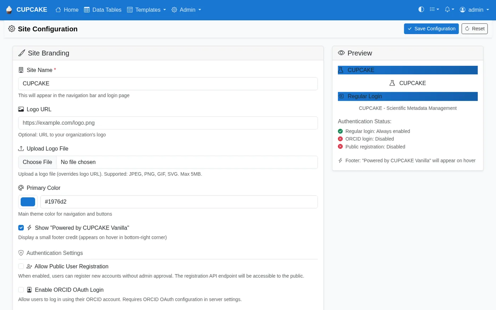
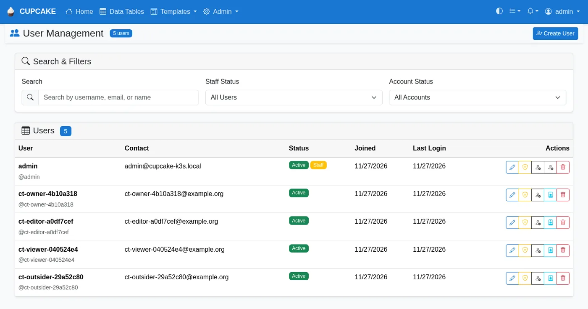

Site settings
Site Configuration sets the site's name, logo and main colour, and whether "Powered by CUPCAKE Vanilla" is shown. Under Authentication Settings it turns public registration and ORCID sign-in on or off. Audio/Video Transcription chooses the Whisper model used to transcribe recordings and shows the background workers.

Users
User Management searches accounts by name, staff status and account status, and creates, edits and deletes them. Reset password sets a new password, optionally asking the user to change it at the next sign-in.
